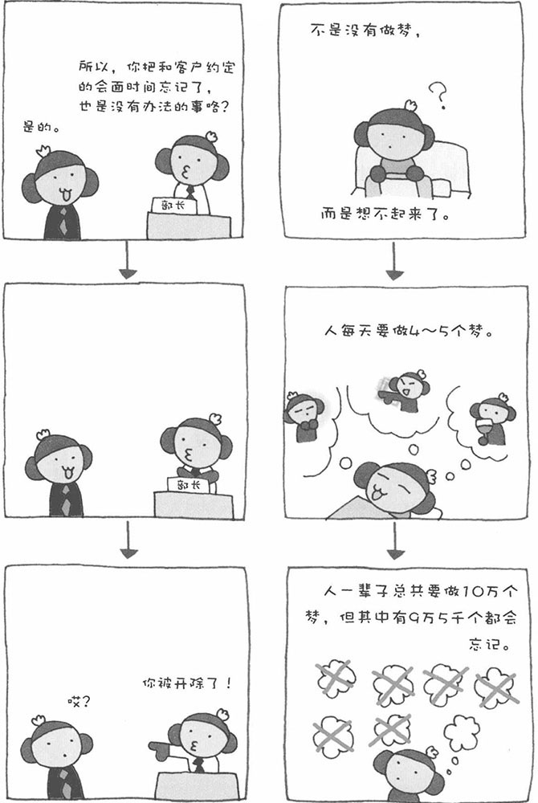
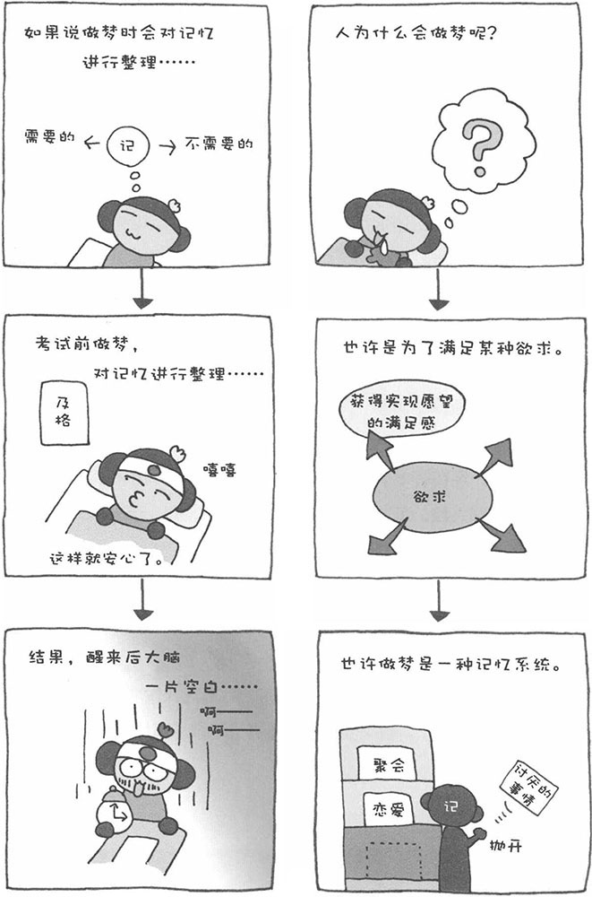
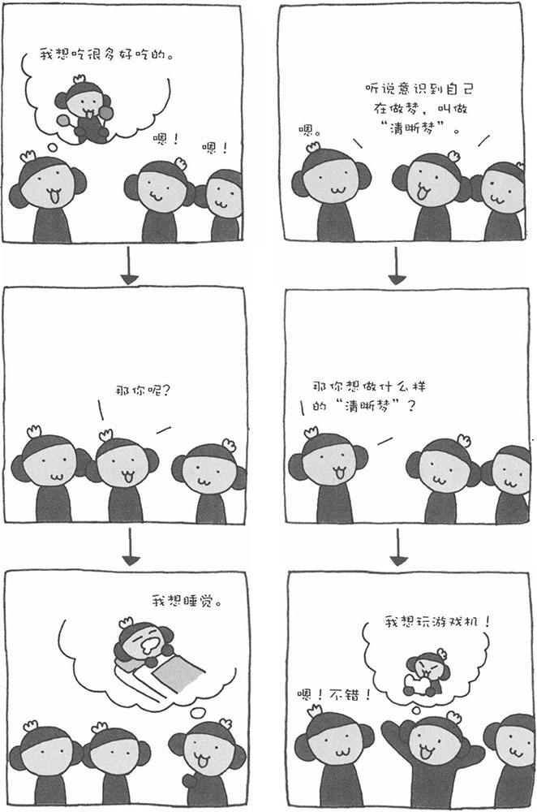
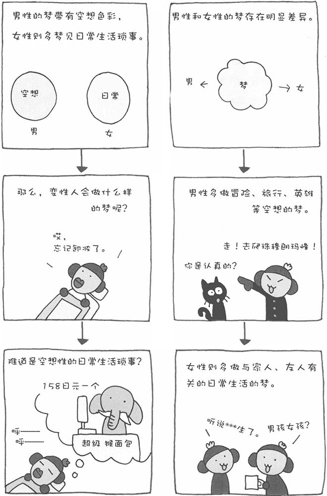
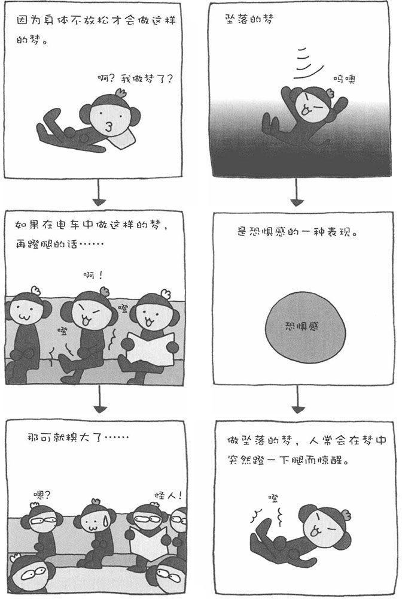
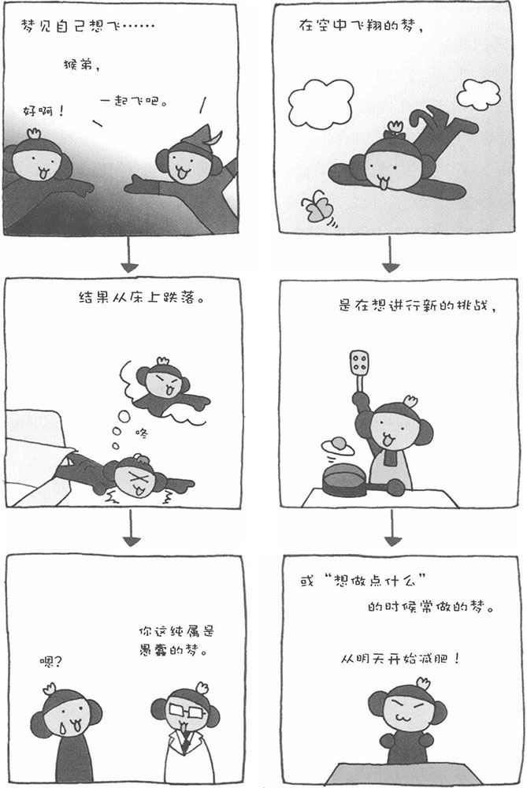
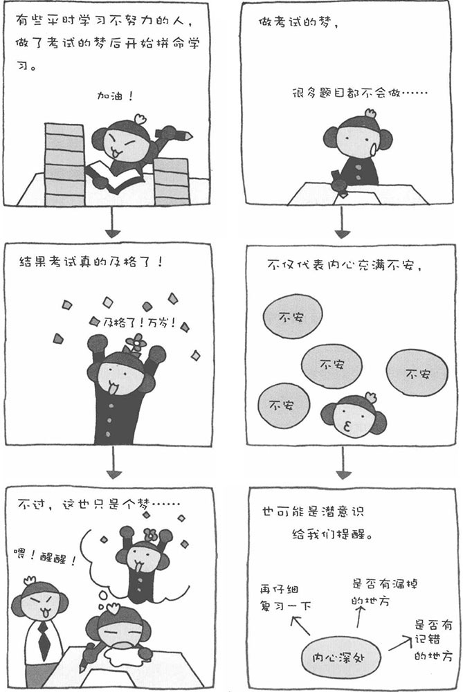
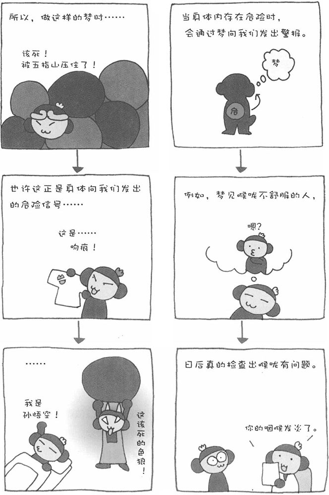
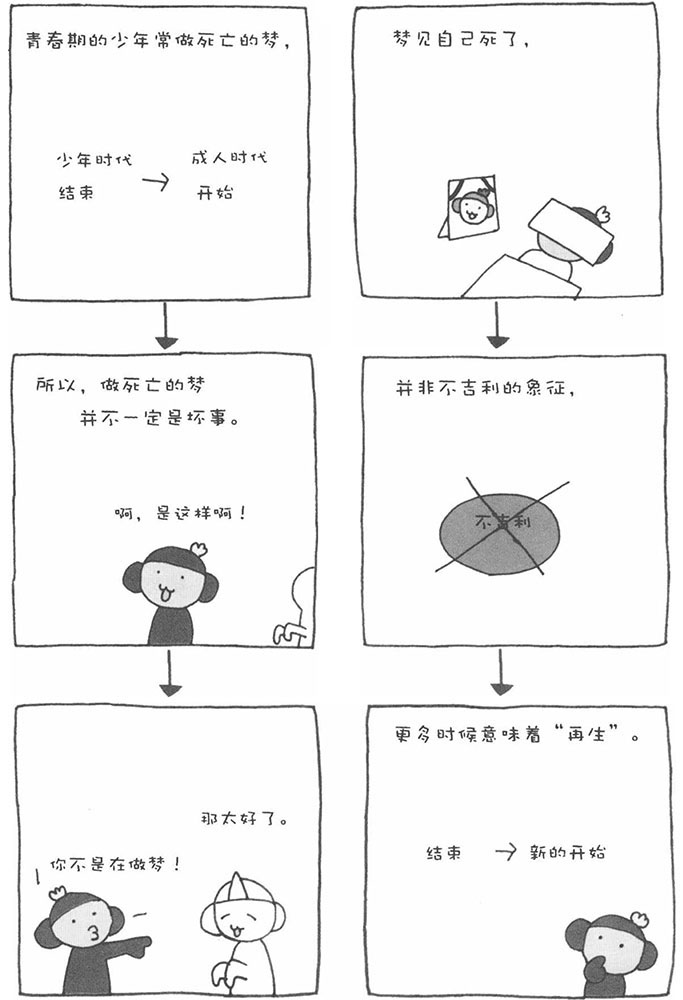

有时早上醒来，您会伸个懒腰说："啊，昨晚又做梦了。"有时，您也会说："昨晚一个梦也没做。"如果做梦了，梦里的内容肯定是丰富多彩的。有时，梦中的情节会有个完整的结局，有时却会梦到莫名其妙、难以理解的形象或事情。有时，多年不见的朋友会突然出现在梦中。当我们醒来时，有些梦我们记得很清楚，甚至连细节都能回忆起来，而有的梦只剩下支离破碎的片断，甚至完全模糊不清了。
人在睡眠时，有两种状态交替出现，一种是脑和身体都休息的状态（即REM睡眠），另外一种是脑清醒但身体休息的状态（即NONE-REM睡眠）。人主要在脑清醒的睡眠状态下做梦（但最近的科学研究发现，在脑休息的状态下，人也会做梦）。
精神分析学家弗洛伊德认为，人会把愿望埋藏在内心深处。处于清醒状态时，意识会抑制愿望。而当人入睡后，意识的控制就放松了，内心深处的愿望会影像化，于是便形成了梦。人进入睡眠状态后，虽然意识的控制放松了，但并非完全失去控制。当梦中的内容过度刺激意识时，这些内容会被埋藏进内心深处。这就是我们醒来后回忆不起来的梦。实际上，我们每天都会做梦。说是没有做梦，其实是想不起来了。一个人平均每天要做4～5个梦，照这么计算每年大约要做1300个梦，而一辈子大约要做10万个梦。
人是非常贪图安逸的，那些对自己不好的事情，我们会主动忘记。这叫做自我保护。也就是说，从不做梦的人，也可以说他们天天都在做噩梦，只是醒来后都不记得罢了。

那么，人的愿望为什么会被影像化、以梦的形式呈现出来呢？到目前为止，还没有发现人做梦的真正原因。关于梦的成因，各个学派的说法不一，争论异常激烈。总之，关于梦的原理目前还处于研究阶段。
关于梦的成因众说纷纭，其中不乏具有说服力的观点。比如，人在现实中无法实现的愿望，会在梦中得偿所愿，使人产生一种实现愿望的满足感，从而缓解欲求不满的现状。如果愿望一直被压抑在内心深处，会给人造成紧张的情绪。因此，可以说做梦也是一种缓解压力的方法。实际上，如果做梦时受到打扰，人容易形成攻击性性格，或者出现不稳定情绪。此外，还有的学者认为，梦可以将人在清醒时收集的信息进行筛选、整理，区分出"必要的信息"和"不必要的信息"，然后按照需要将其存储在大脑中。
人所做的梦，大多数情况下都是平时烦恼的事情。在梦中，问题经常都会得到解决。据说，有位数学家曾被为一道难题所困，但某一天在睡梦之中就将它解开了。此外，梦还能为体内的危险发出警报。据报道，曾经有一位心脏病患者，在他出现自觉症状前的某天夜里，他做了一个胸口绞痛的梦。从上述事例中，我们至少能总结出一个结论，那就是做梦对人来说是非常重要的。
其实，不仅人类会做梦，研究结果表明其他哺乳动物和鸟类也会做梦。养狗的人可能都遇到过爱犬做梦的情况，它们睡觉时嘴里还会发出呜呜的鸣叫声。可能是睡前没有吃饱，睡觉时梦见一大块肉骨头摆在眼前。做这样的梦可以让它的情绪稳定下来。遇到这样的情况时，我们不要大叫它，让它继续静静地睡就好了。

晚上睡觉时，如果做了梦，一般当时都觉察不到。只有到第二天早上醒来时，才会意识到。不过，有时，我们在做梦时也能意识到自己是在做梦，这就叫做"清晰梦"。为什么会出现这种现象呢？科学家称，人在睡眠时，如果大脑中掌管语言和运动的部分处于半清醒的状态，就会做"清晰梦"。科学家还说，经常做"清晰梦"的人非常少。不过，如果普通人进行正确的训练，也能做"清晰梦"。
"清晰梦"有一个很厉害的地方，那就是人在梦中可以控制故事情节的发展，可以做自己喜欢做的事。在梦中可以满足现实中无法实现的愿望，解决我们欲求不满的问题。如果真是这样，我们可以通过做"清晰梦"将表层意识中一直惦记的愿望在梦中实现。有研究人员采访了很多做过"清晰梦"的人，他们都感觉在梦中实现愿望可以得到幸福感和满足感。
那么，该如何训练才能做"清晰梦"呢？首先，平时多给自己做心理暗示，对自己说："做梦时，能意识到自己在做梦"；其次，像写日记一样，把梦的内容记下来。此外，现在有很多研究"清晰梦"的研究人员和机构，相关的书籍也不少。如果您感兴趣，可以找一些书来看。不过，有一部分书籍并非用科学的眼光来研究"清晰梦"，而是从所谓"灵"的角度来进行解析，因此选择参考书籍时一定要慎重。
我本人也有几次做"清晰梦"的经历。晚上做梦时，能隐约感觉到自己是在做梦。第一次，我很想飞，结果像鸟儿一样拍打了几下手臂，结果真的就飞了起来，当时那种幸福感简直酷毙了。然而，后来几次做梦就不行了，每当意识到自己在做梦时就醒了。看来要控制梦还真是不容易啊！

◎ 梦与颜色
梦到底是彩色的还是黑白的？人们对此一直争论不休。近些年来的研究结果大多表明梦是有颜色的。有学者认为这和彩色电视机的普及有一定关系，我认为这种说法根本站不住脚。我个人认为，梦基本上都是彩色的，只是我们没有特别注意罢了。
我们平时看各种事物、景色的时候，很少会有意识地辨别它们的颜色，大多数时候都是一眼带过。其实，我们看世界的时候，有很多颜色进入到我们的眼睛，但我们很少会刻意区分这是红色、那是蓝色。做梦也一样，梦见的事物也都是彩色的，只是我们没有意识到。曾经有人对画家、设计师的梦进行过研究。结果，这些经常与颜色打交道的人的梦多是彩色的。这说明他们对颜色很敏感，会有意关注事物的颜色，在梦中也不例外。
◎ 梦的男女差异
曾有心理学家对1000名男女进行梦的研究，想就此调查男人和女人的梦是否存在差别。研究结果表明，男性多梦见敌对的人物，而女性多梦见友好的人物；女性经常做与家庭、家人有关的梦，而男性如果没有特别意识的话，基本上不会做与家庭有关的梦；女性多做购物、会友等与日常生活相关的梦，而男性的梦中更多的是冒险、旅行、英雄等空想。男女做梦的区别更加显着的区别在于：生大病时，男性大多会直接梦到死亡，感觉到死亡的恐怖，而女性大多会梦见与友人分别时依依惜别的场面。

梦中包含着各种各样的信息，也许是内心深处的愿望，也许是身体发出的危险警报，也许还有其他什么理由。因此，没有一个简单的公式可以告诉我们做了什么样的梦就代表什么，而且做梦时人的情感不同，梦的含义也不相同。总之，不能对梦进行简单判断。
不过，特定的梦具有一定的倾向性。在这里，我为大家总结一些心理学家和睡眠研究者关于梦的研究结果。不过，即使对于同一个梦，不同的研究者也有不同的解释，并不是一就是一、二就是二那么简单的事情，所以请读者朋友不要生搬硬套，只把它作为认识真实自我的一个参考。
对自己的梦进行分析、判断之前，我们最好先做一些准备工作。在床头放一个笔记本，早晨起床时把夜里做的梦记录下来。由于梦在头脑中记忆不了多久，只要把梦中的状况、场面、当时发生了什么、自己做了些什么以及想了些什么记下来就可以了。
内心到底想通过梦给我们传递什么样的信息呢？
◎ 坠落的梦
做坠落的梦，代表心理可能存在某种不安和恐惧。实际上，坠落的感觉并不痛，只是代表一种恐惧感。工作中遇到挫折、失恋等不安常会做坠落的梦。此外，对未来不确定的因素充满不安时，也会做这样的梦。
在坠落的过程中，有时我们能意识到"啊！自己是在做梦"，也有人在做坠落的梦时，腿会突然伸一下，随即就惊醒了。做坠落的梦可以解释为是某种不祥的暗示，也有人认为在梦中坠落可以使精神得到平衡。我认为，做这样的梦也许是一种提醒吧。

◎ 飞翔的梦
当人生得意、事业成功、爱情顺利时，人常会做飞翔的梦。制定新的目标时，也会做类似的梦。不过，也有心理学家认为，当人想逃避现实行或欲求不满时，才会做飞翔的梦。"想做点什么"的愿望，在梦中会以"飞翔"的形式得到实现。如果您最近做了飞翔的梦，但却找不到合理的理由，那八成是因为您厌倦了目前平淡的生活，"想做点什么"。
飞翔的梦一般都相当真实。据报道曾经有人梦见自己能飞，由于梦太真实了，他误以为自己真的能飞，结果在现实中试了一下就摔成了重伤。也许您会想：怎么会有这么蠢的人啊？可是，有些梦相当真实，所以千万不要把梦和现实混为一谈哟！
◎ 被追赶的梦
一般情况下，当发生不安或陷入纷争时，人大多会做被追赶的梦。工作压力大、日程安排紧的公司职员常常会做被人追赶的梦。此外，不仅强烈的不安会使人做被追赶的梦，当不安、兴奋与期待感混合在一起时，人也常会做被追赶的梦。当私生活的环境发生改变、被委以重任的时候，也会做类似的梦。
如果梦中被不明身份的人追赶，很可能在现实中看到了什么恐怖的东西，又想看清这个东西的真面目。此外，也有一些心理学家认为，做被追赶的梦，与儿时的恐怖经历或者潜在的恐怖体验存在某种关联。

◎ 考试的梦
感觉自己无法完成任务或缺乏自信的时候，一般会做考试的梦。如果近期有考试，对考试的不安就会体现在梦中。这也许是因为考前准备得不充分，自己的潜意识以梦的形式告诉自己应该再努力复习一下。如果是在没有任何不安的情况下做了考试的梦，那也许是一种警告。您应该再仔细检查一下，看复习中有没有漏掉的地方。反之，也有的人对考试充满不安，但梦见自己考试非常成功，结果获得自信。等到真正考试的时候，发挥异常出色。
◎ 被拥抱的梦
做被拥抱梦存在明显的男女差异。男性基本上不会做这样的梦，而很多女性都做过被拥抱的梦。想确认身边是否有值得信赖的人时，往往会做被拥抱的梦。当然，希望得到心上人拥抱的愿望，也会促使人做类似的梦。与男性相比，女性更容易做被拥抱的梦，这说明女性更重视人与人之间的感情联系。很多女性通过拥抱可以感受到人与人之间的温情。
◎ 找厕所的梦
有时，当我们处于睡眠状态时，并没有尿急，却在梦中拼命寻找厕所。很多做这个梦的人都是有话不敢说，把它埋藏在心里。想说却说不出口的紧张感，在梦中就转化成了寻找厕所的行为。

◎ 怀孕的梦/暗示怀孕的梦
有些女性即使没有怀孕，有时也会做怀孕的梦。这样的女性分为两种，一种希望怀孕，另外一种不希望怀孕。对于怀孕的愿望和不想怀孕的念头，都以怀孕的形式在梦中出现。此外，还有研究人员认为，做怀孕的梦是真实怀孕的一个征兆。
曾有一位美国心理学家对150多名孕妇做过调查，专门研究她们的梦。结果发现，除了怀孕的梦之外，还有一些梦是对怀孕的一种暗示，比如，梦见在田里播种、梦见小鱼在水中游、梦见河流或大海的水等。据那位心理学家分析，有关水的梦可能和羊水有关。
◎ 生病、受伤的梦/暗示生病的梦
当人的身体或心理的平衡被打破时，常会做生病或受伤的梦。此外，也有实例证明，有时做类似的梦是深层心理给我们的警告，提醒我们某些自己还没有意识到的潜在疾病。这样的梦大多不是直接性的。
常年从事梦的相关研究的罗萨林德·卡拉伊特给我们介绍一个有趣的案例。有位男性梦见自己吞了一块烧红的煤块，感觉喉咙有种灼烧感。他确信自己的喉咙有问题，于是去医院检查，但医生检查后说他没病。
可是，一段时间之后，他又梦见有针刺了他的喉咙，就在几周之后他的喉咙里长了一个肿瘤。再去医院时，诊断结果竟然是甲状腺癌。这说明，某些疾病在初期甚至连医院也检查不出来，但我们的身体却可以察觉到，并能通过梦向我们发出警告。因此，如果能够多掌握一些有关梦的知识，也许能尽早捕捉到身体发出的危险信号。

◎ 死亡的梦
也许有人认为梦见死亡是非常不吉利的，但事实并非如此。很多心理学家把死亡的梦理解为是"再生"的信号。他们解释说，当人即将开始某种新的生活，或者想开始过新生活时，常会梦见自己死了。尤其是青春期的孩子，当迈向成年的那个时间点时，常会梦见自己死了。这也许意味着，自己的少年时代要结束了。
◎ 吵架的梦
梦到吵架时，不管当时的心情如何，大多数情况下吵架的对象都是自己。即使梦中在与其他人吵架，但大多只是自己的分身。当人内心纷乱、纠缠不清时，为了整理思绪，容易做吵架的梦。此外，当心怀不满时，也会通过做吵架的梦将不满的情绪发泄出来。
◎ 羞耻的梦
女性梦见自己误入男厕所或者在大庭广众赤身裸体等，这些都是所谓的羞耻的梦。当人面临第一次约会或者即将参加面试时，常会做类似羞耻的梦。这是因为即将暴露在人前心中充满不安的缘故。
◎ 去医院看病的梦
当人梦见自己去医院看病时，常代表想找一个可以依赖的人。当人面临巨大的工作压力、想逃避现实的时候，也容易做住院的梦。再者，梦见自己去医院看病，也许是深层心理对体内潜在危险的一个警告。
